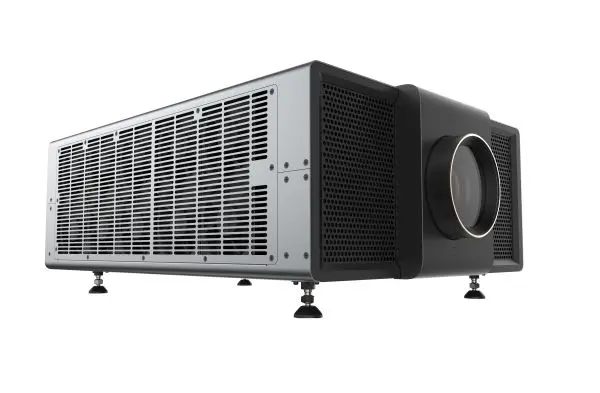

Мощные инсталляционные проекторы
Серия мощных инсталляционных лазерных проекторов Appotronics предназначена для демонстрации контента высокого разрешения на большом экране во время массовых мероприятий: выставок, фестивалей, музейных инсталляций, концертов. Проекторы серии T характеризуются высокой яркостью (34000 люмен) и потрясающим цветовым охватом (120% REC 709), что гарантирует вовлеченность аудитории и успешность любого мероприятия.